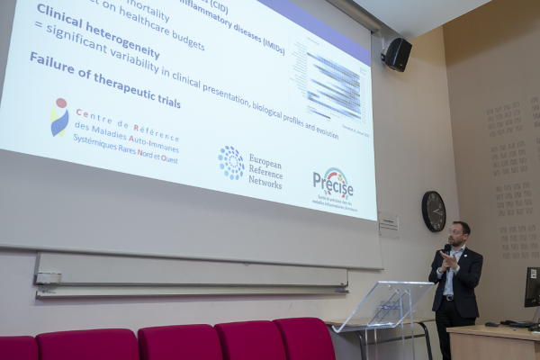
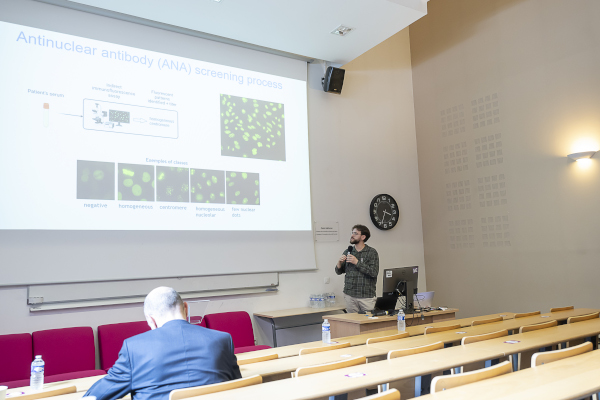

The symposium took place in Lille on June 16th. Pr. Vincent Sobanski held a talk about AI in precision medicine and Clément Chauvet presented his work on automatic image analysis of autoantibodies. He also participated in a poster session with Julien Sottiaux, Marie-Elise Martel, and Kilian Debraux, presenting their most novel researches about AI in healthcare. The symposium ended with the signature of the Leuven Lille Louvain Health Alliance, a collaboration project to boost research in health science.
The AI in Health Symposium took place in Lille on June 16th. Reuniting the rectors of the three universities: Regis Bordet from Lille, Severine Vermeire from Leuven, and Françoise Smets from Louvain, this symposium exposed the recent innovations and emerging challenges of AI usage in healthcare.
In this context, Pr. Vincent Sobanski held a talk on the importance of AI in precision medicine. As it can be seen in Systemic Sclerosis, a rare and heterogeneous chronic disease, AI can be of great use to predict patients prognosis or to unravel hidden subgroup of homogeneous patients, improving their care and treatment acuracy.
Clément Chauvet, a PhD Student in the Endomic team, presented his thesis project on the prediction of antinuclear antibodies patterns using deep learning approaches. He showed his advances but also the challenges of this approach such as manipulating highly dimensional images or having a large panel of identifiable patterns, with some being close to each other.
 |
 |
Our collaborators in the ARCHIE chair: Pr. Celine Vens and Pr. Maarten De Vos also held each one a talk. Pr. Vens presented the different usage of AI: supervised, semi-supervised and unsupervised machine learning, for chronic diseases. And Pr. De Vos preseted different evolution pathways AI may follow in the comming years in healthcare.
During a poster session at the end of the symposium, Marie-Elise Martel, Julien Sottiaux, Clément Chauvet, and Kilian Debraux, PhD students of our team, had the opportunity to present their research on multiple topics related to AI in healthcare. Marie-Elise presented her contribution on the development of a novel unsupervised biclustering algorithm: HBic. Julien presented an application made conjointly with a Master student to enhance explainability in AI. Clément presented the results of his systematic review on collecting treatment data from medical notes using LLMs. Kilian presented the advancements of his systematic review on clustering longitudinal data in healthcare.
Finally, the symposium ended with the signature of the Leuven Lille Louvain Health Alliance, a strong collaboration between universities and hospitals from the three cities, pooling their expertise to further strengthen research, education, and innovation in health sciences.
PhD Student in Data Science, making unsupervised ML model for longitudinal medical data
{kind=link}